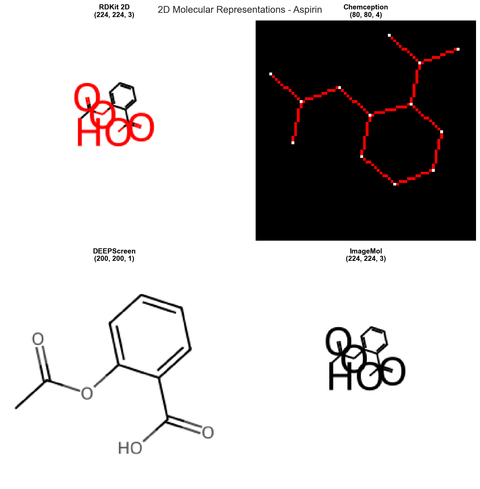
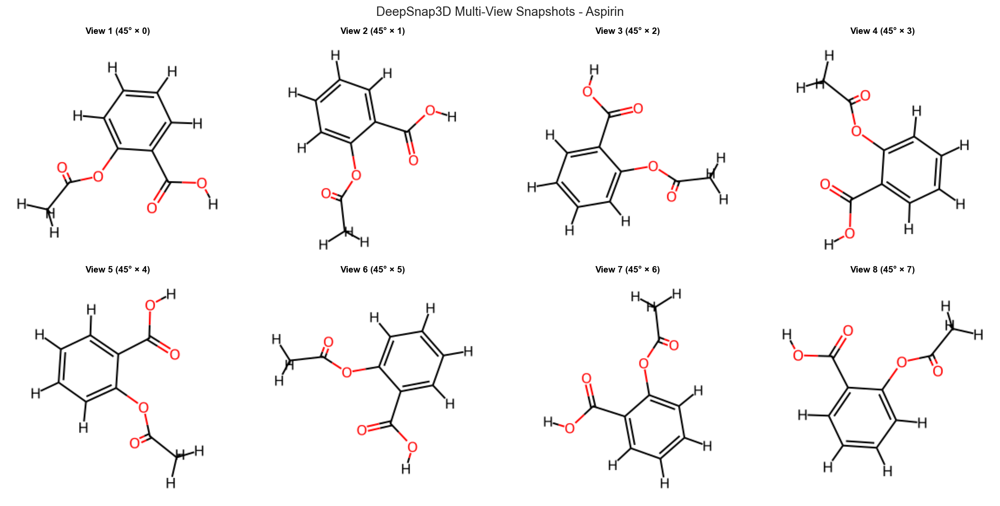
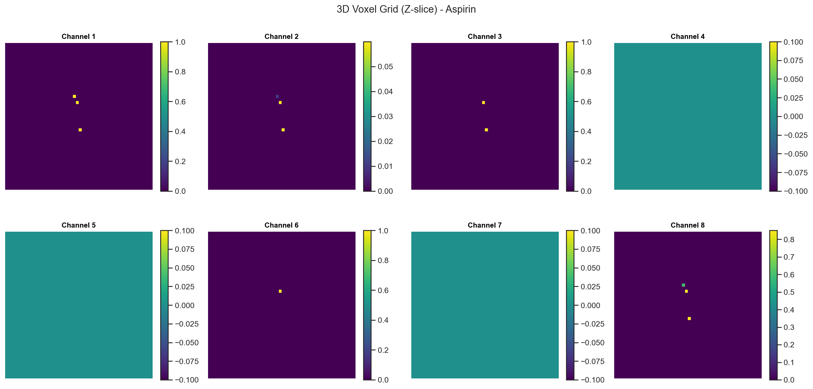
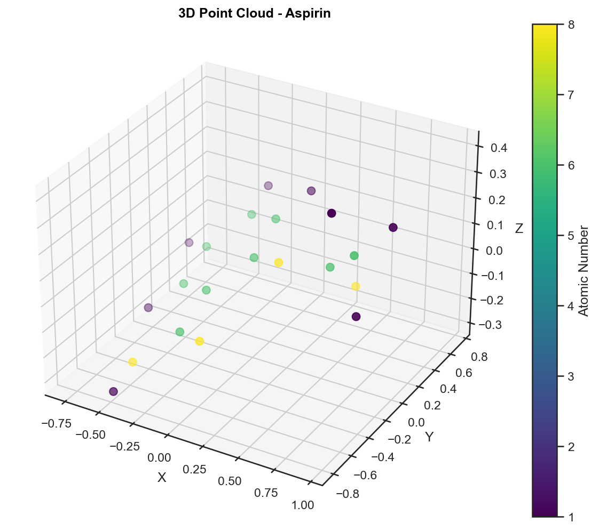
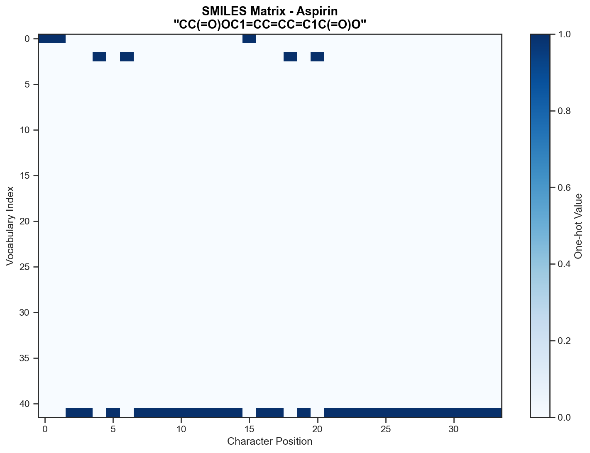
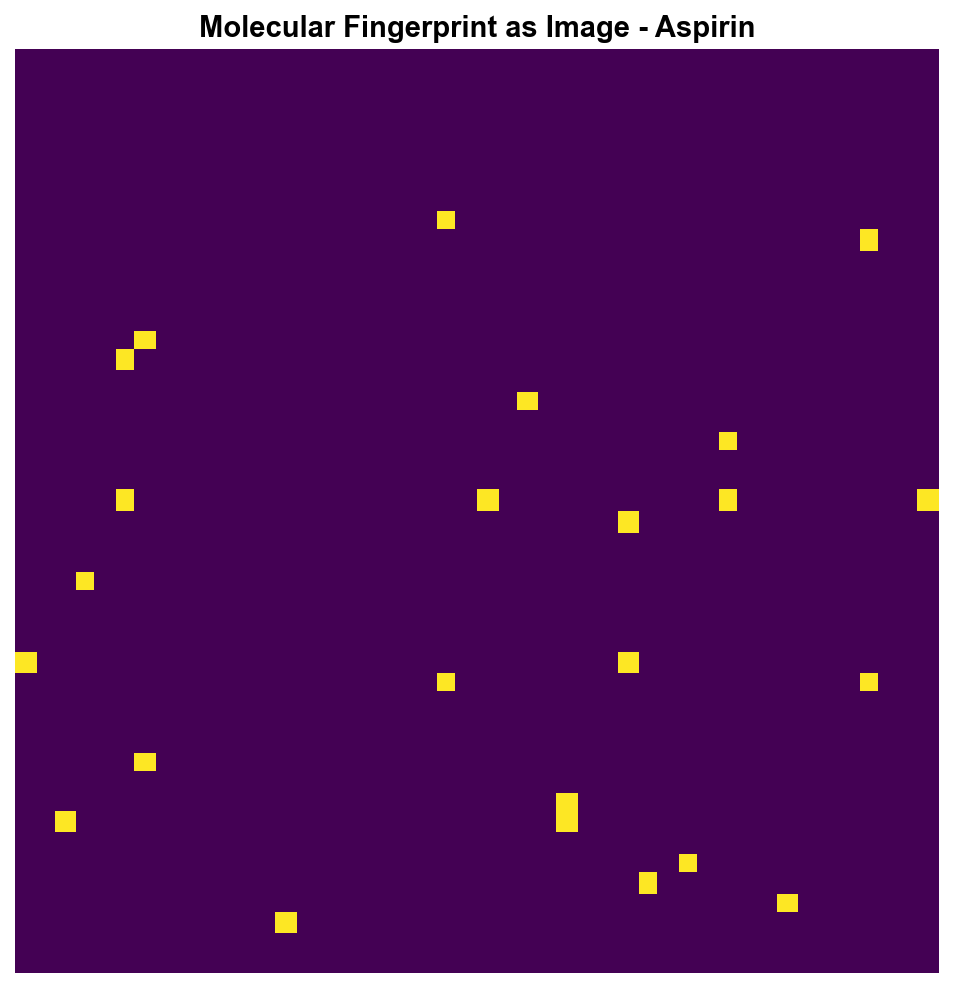

Image Representations¶
Generate diverse image-based molecular representations for deep learning applications. Convert molecular structures into 2D images, 3D voxel grids, video sequences, and more - all optimized for CNN processing.
Dependencies¶
# Optional dependencies for specific features
pip install torch torchvision # For CNN feature extraction
conda install -c conda-forge pymol-open-source # For high-quality 3D rendering
Quick Start¶
import polyglotmol as pm
import numpy as np
# Generate 2D molecular image
image_featurizer = pm.get_featurizer("rdkit_2d_image")
image = image_featurizer.featurize("CCO") # Shape: (224, 224, 3)
# Extract CNN features from images
cnn_featurizer = pm.get_featurizer("cnn_features_resnet")
features = cnn_featurizer.featurize("CCO") # Shape: (2048,)
# Generate multi-channel chemical image
chemception = pm.get_featurizer("chemception_image")
multi_image = chemception.featurize("CCO") # Shape: (80, 80, 4)
# Create 3D voxel representation
voxel_featurizer = pm.get_featurizer("voxel_grid")
voxels = voxel_featurizer.featurize("CCO") # Shape: (48, 48, 48, 8)
Visual Examples¶
Here are examples of different molecular image representations generated from aspirin (CC(=O)OC1=CC=CC=C1C(=O)O):
 Standard 2D molecular structure representations showing different rendering styles and feature encodings.
 DeepSnap-style multi-view 2D projections of 3D molecular conformations from different rotation angles.

3D voxel grid representation showing 8 chemical property channels through a Z-slice of the molecular volume.
 3D point cloud with atomic coordinates colored by atomic number for geometric deep learning.
 SMILES string converted to a 2D matrix with one-hot encoded characters for CNN processing.
 Molecular fingerprint visualized as a 2D image showing bit patterns and structural features.
Available Featurizers¶
Featurizer |
Category |
Output Shape |
Description |
|---|---|---|---|
|
2D |
(224, 224, 3) |
Standard 2D molecular structure image |
|
2D |
(80, 80, 4) |
Multi-channel image with chemical features |
|
2D |
(200, 200, 1) |
DEEPScreen-style grayscale images |
|
2D |
(224, 224, 3) |
Publication-quality molecular images |
|
Features |
(2048,) |
CNN features from pre-trained ResNet50 |
|
3D |
(256, 256, 3) |
Multi-view 3D snapshots |
|
3D |
(48, 48, 48, 8) |
3D voxel grid for 3D CNNs |
|
3D |
(100, 6) |
Point cloud with atom features |
|
3D |
(224, 224, 3) |
High-quality PyMOL 3D rendering |
|
3D |
(1000, 8) |
Molecular surface descriptors |
|
Video |
(60, 224, 224, 3) |
VideoMol rotational sequences |
|
Video |
(≤20, 224, 224, 3) |
Multiple conformer video |
|
Sequential |
(400, 42) |
SMILES as 2D matrix for CNNs |
|
Sequential |
(256, 256, 1) |
Fingerprint as image |
|
Video |
(100, 224, 224, 3) |
Molecular dynamics trajectory |
Feature Categories¶
Standard and multi-channel 2D molecular structure images for CNN processing
Voxel grids, point clouds, and surface representations for 3D analysis
Batch Processing Example¶
# Process multiple molecules efficiently
molecules = ["CCO", "CCN", "CCC", "c1ccccc1"]
# Generate 2D images in parallel
featurizer = pm.get_featurizer("rdkit_2d_image")
images = featurizer.featurize(molecules, n_workers=4)
print(f"Generated {len(images)} images, each with shape {images[0].shape}")
# Combine with dataset
from polyglotmol.data import MolecularDataset, Molecule
dataset = MolecularDataset([Molecule(smi) for smi in molecules])
dataset.add_features("rdkit_2d_image")
dataset.add_features("cnn_features_resnet")
Integration with ML Pipelines¶
# CNN training pipeline
import torch
import torch.nn as nn
from torch.utils.data import DataLoader, TensorDataset
# Generate training data
smiles_train = ["CCO", "CCN", "CCC"] * 100
labels_train = [0, 1, 0] * 100 # Binary classification
featurizer = pm.get_featurizer("rdkit_2d_image")
X = np.array(featurizer.featurize(smiles_train))
y = np.array(labels_train)
# Prepare for PyTorch (NCHW format)
X_tensor = torch.FloatTensor(X.transpose(0, 3, 1, 2)) / 255.0
y_tensor = torch.LongTensor(y)
# Create DataLoader
dataset = TensorDataset(X_tensor, y_tensor)
dataloader = DataLoader(dataset, batch_size=32, shuffle=True)
print(f"Training data shape: {X_tensor.shape}") # (300, 3, 224, 224)
Performance Tips¶
# Memory-efficient processing for large datasets
def process_in_chunks(smiles_list, chunk_size=1000):
featurizer = pm.get_featurizer("rdkit_2d_image")
for i in range(0, len(smiles_list), chunk_size):
chunk = smiles_list[i:i+chunk_size]
yield featurizer.featurize(chunk, n_workers=8)
# Process 10K molecules in chunks
large_dataset = ["CCO"] * 10000
all_features = []
for chunk_features in process_in_chunks(large_dataset):
all_features.extend(chunk_features)
Error Handling¶
# Robust batch processing with error handling
def safe_batch_featurize(smiles_list):
featurizer = pm.get_featurizer("rdkit_2d_image")
results = []
failed = []
for i, smiles in enumerate(smiles_list):
try:
result = featurizer.featurize(smiles)
results.append(result)
except Exception as e:
print(f"Failed {smiles}: {e}")
results.append(None) # Placeholder
failed.append(i)
return results, failed
# Test with mixed valid/invalid SMILES
test_molecules = ["CCO", "INVALID", "CCN"]
images, failed_indices = safe_batch_featurize(test_molecules)
print(f"Successfully processed: {len(images) - len(failed_indices)}")
References¶
Chemception: Goh, G.B., et al. “Using rule-based labels for weak supervised learning.” KDD 2018
DEEPScreen: Altae-Tran, H., et al. “Low data drug discovery with one-shot learning.” ACS Central Science 2017
DeepSnap: Uesawa, Y. “Quantitative structure-activity relationship analysis using deep learning.” Bioorg Med Chem Lett 2018
VideoMol: Zeng, X., et al. “Accurate prediction using self-supervised image representation learning.” Nature Machine Intelligence 2022
See also: Image Representations API (…image) for detailed API documentation.